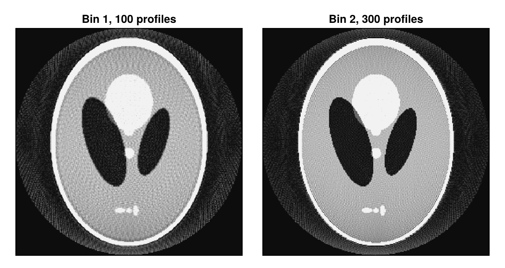

Bin Profiles into Contrasts
Self-gated acquisitions derive a gating signal from data recorded after every excitation, for example a navigator echo, the free induction decay or the center of k-space in each readout, and sort the profiles afterwards. In the cardiac cine imaging of Trotier et al., the profiles are sorted into bins of the cardiac cycle, and each bin is reconstructed as an image of its own; Ribot et al. discard the profiles acquired during breathing instead. In MRIReco.jl, the bins become the contrasts of the data, usually with different numbers of profiles. This guide assigns the profiles of raw data to bins and reconstructs each bin. Data Model explains how RawAcquisitionData and AcquisitionData store the contrasts.
Raw Data
This guide bins raw data, in which every profile has its own header. Data that is already sorted into bins in arrays can instead be passed with one trajectory per bin, as in Create AcquisitionData from Arrays. The example simulates 400 radial profiles of a phantom with 256 samples each and converts the result into raw data:
using MRIReco, MRISimulation, CairoMakie
using ImageUtils: shepp_logan
N = 256
image = shepp_logan(N)
params = Dict{Symbol, Any}()
params[:trajName] = "Radial"
params[:numProfiles] = 400
params[:numSamplingPerProfile] = N
acqData = simulation(image, params)
rawData = RawAcquisitionData(acqData)
length(rawData.profiles)400Assigning the Bins
The counter contrast in the header of each profile, counting from 0, assigns the profile to a bin. The ISMRMRD format also has a counter phase for cardiac phases, but the conversion into AcquisitionData does not use it, so bins stored in phase have to be copied into contrast. In a self-gated acquisition, the gating signal decides; here, every fourth profile goes into the first bin and the others into the second, so that the bins hold 100 and 300 profiles:
for (i, profile) in enumerate(rawData.profiles)
profile.head.idx.contrast = mod(i, 4) == 0 ? 0 : 1
endThe conversion creates one trajectory per contrast. Unless the trajectory name is "cartesian", it takes the k-space positions from the profiles: with the name "custom", it collects the profiles of each contrast in their order. With the name "Radial" that the simulation stored, it would place them by their phase encoding counters instead, so that the trajectory of each bin would have all 400 profiles, those of the other bin at the center of k-space, and the reconstruction would fail.
rawData.params["trajectory"] = "custom"
acqBinned = AcquisitionData(rawData)
[numProfiles(trajectory(acqBinned, contrast)) for contrast in 1:2]2-element Vector{Int64}:
100
300Reconstructing the Bins
The reconstruction returns one image per contrast, in the fourth dimension:
recoParams = Dict{Symbol, Any}()
recoParams[:reco] = "direct"
recoParams[:reconSize] = (N, N)
images = reconstruction(acqBinned, recoParams)
size(images)(256, 256, 1, 2, 1, 1)The figure shows both bins in the same gray scale, cut at a quarter of the maximum to make the streaks visible. The first bin, with a quarter of the profiles, shows more streaks than the second:
m = maximum(abs.(images))
fig = Figure(size = (640, 340))
for (i, title) in enumerate(["Bin 1, 100 profiles", "Bin 2, 300 profiles"])
ax = Axis(fig[1, i], title = title, aspect = DataAspect(), yreversed = true)
heatmap!(ax, abs.(images[:, :, 1, i, 1, 1])', colormap = :grays, colorrange = (0, m / 4))
hidedecorations!(ax)
end
fig
Limits
AcquisitionDatahas one trajectory per contrast for all slices and repetitions, so bins that hold different profiles in different slices or repetitions need oneAcquisitionDataper slice and repetition.- The conversion of a custom trajectory only works for one slice, repetition and average. With several slices or repetitions, it counts the profiles of a bin in all of them and adds profiles of zeros, which changes the result without an error, and several averages are kept as separate profiles instead of being averaged (#331).
In both cases, convert each slice and repetition on its own: keep only its profiles, set their counters slice and repetition to 0, and convert and reconstruct them as above.
This page was generated using Literate.jl.